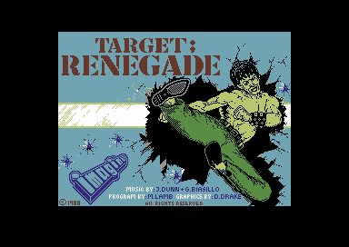
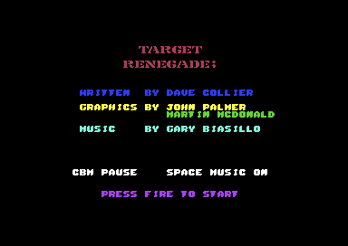
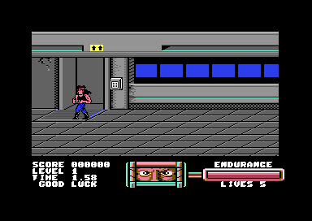
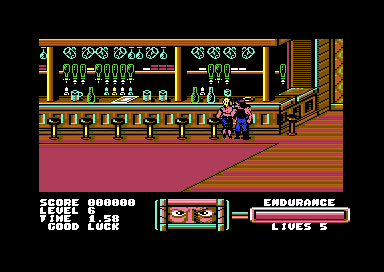

<meta charset="utf-8"><meta name="viewport" content="width=device-width,initial-scale=1"><title>Target Renegade</title>
<link rel="stylesheet" href="https://fonts.googleapis.com/css2?family=Lato:wght@400;700;900&family=IBM+Plex+Mono:wght@400;500&display=swap"><style>
:root{
  --bg:#23262d; --paper:#e9e7e1; --surface:#ffffff; --surface-2:#f1efea; --line:#d5d3cc; --line-soft:#e0ded8;
  --ink:#2f3136; --ink-soft:#55585f; --ink-mute:#80838a;
  --link:#1f5fa8; --link-hover:#154480; --accent:#1f5fa8;
  --amber:#c25a00; --cyan:#1f5fa8; --coral:#d04a3a; --green:#2a8a4a; --violet:#4a5bd6; --hl:#fff0c2;
  --chip:#2f3136; --chip-ink:#ffffff;
  --c64blue:#40318d; --c64grey:#686868;
  --fd:'Lato',system-ui,sans-serif; --fb:'Lato',system-ui,sans-serif; --fm:'IBM Plex Mono',ui-monospace,Menlo,monospace;
  --col:1080px; --gx:68px; --fs:17px; --lh:1.6; --hw:900; --h1:46px; --h2:26px; --sy:48px; --pp:26px; --r:10px;
  --plate-shadow:0 1px 2px rgba(0,0,0,.05),0 4px 14px rgba(0,0,0,.05);
}
*{box-sizing:border-box}
html{background:var(--bg);min-height:100%}
body{background:var(--paper);color:var(--ink);font-family:var(--fb);font-size:var(--fs);line-height:var(--lh);max-width:var(--col);margin:0 auto;min-height:100vh;padding:0 0 4rem}
h1,h2,h3{font-weight:var(--hw);letter-spacing:-.01em;text-wrap:balance;color:var(--ink);margin:0}
.wrap{padding:0 var(--gx)}
.hero{padding:48px var(--gx) 8px;text-align:left}
.eyebrow{font-family:var(--fm);font-size:12px;letter-spacing:.08em;text-transform:uppercase;color:var(--ink-mute);margin:0 0 10px}
.hero h1{font-size:var(--h1);line-height:1.15;letter-spacing:-.02em;margin:0 0 14px}
.hero .sub{margin:0 0 .6em;color:var(--ink-soft)}
section{padding:var(--sy) 0 24px}
section:last-of-type{border-bottom:none}
.fig{font-family:var(--fm);font-size:12px;letter-spacing:.08em;text-transform:uppercase;color:var(--ink-mute);margin:0 0 10px}
h2.t{font-size:var(--h2);margin-bottom:12px}
.lede{color:var(--ink-soft);margin:0 0 30px}
.plate{background:var(--surface);border:1px solid var(--line);border-radius:var(--r);padding:var(--pp);box-shadow:var(--plate-shadow)}
.cap{font-size:14px;color:var(--ink-mute);margin-top:14px;line-height:1.55}
.cap b{color:var(--ink);font-weight:700}
code{font-family:var(--fm);font-size:.82em;background:var(--chip);color:var(--chip-ink);border-radius:4px;padding:2px 6px;white-space:nowrap}

img{max-width:100%;height:auto;image-rendering:pixelated;border-radius:4px}
.shots{display:grid;grid-template-columns:1fr 1fr;gap:20px}.shots figure{margin:0}
@media(max-width:700px){:root{--gx:24px;--h1:36px}.shots{grid-template-columns:1fr}}
</style><style>.tr-toolbar{display:flex;align-items:center;gap:12px;flex-wrap:wrap}.tr-toolbar label{display:flex;align-items:center;gap:8px}.tr-toolbar button,.tr-toolbar select{font:inherit;padding:6px 10px}.tr-canvas{display:block;max-width:100%;height:auto;image-rendering:pixelated;margin:16px auto}.tr-pair{display:flex;justify-content:center;gap:36px;flex-wrap:wrap}.tr-pair figure{margin:0;text-align:center}.tr-pair canvas{width:192px;height:168px;image-rendering:pixelated;background:#171b28}.tr-readout{font-family:var(--fm);font-size:14px;line-height:1.6;min-height:3.2em}.tr-pad{display:grid;grid-template-columns:repeat(3,64px);gap:5px}.tr-pad button{font:inherit;padding:10px}.tr-pad button[aria-pressed="true"]{background:var(--link);color:white}.tr-layout{display:flex;gap:28px;flex-wrap:wrap;align-items:center}.tr-events{font-family:var(--fm);font-size:12px;max-height:170px;overflow:auto;white-space:pre-wrap}.tr-thumb{max-width:384px;display:block;margin:auto}input[type="range"]{max-width:240px}</style>
<style>.tablewrap table{border-collapse:collapse;width:100%;font-size:15px}.tablewrap th,.tablewrap td{padding:6px 12px 6px 0;border-bottom:1px solid var(--line);text-align:left;vertical-align:top}.tablewrap th{font-family:var(--fm);font-size:12px;letter-spacing:.04em;text-transform:uppercase;color:var(--ink-mute)}</style>
<!-- tabs -->
<header class="hero"><p class="eyebrow">1988 · Imagine Software · Commodore 64</p><h1>Target Renegade</h1><p class="sub">Ocean's licence for the arcade game Renegade let it write its own sequels. This was the first, and its loading picture credits people its manual does not name.</p></header><main class="wrap">
<section id="game"><p class="fig">01 · The game</p><h2 class="t">Five stages in Scumville</h2>
<p>You play a street fighter called Renegade. His brother Matt was investigating the dealings of a gang boss called Mr. Big, was caught, and was punished for it. The manual's plan is revenge.<sup class="fn"><a href="about.html#src-1" title="Imagine manual, Commodore 64, pages 14 and 15">1</a></sup> The story is set in the seedy city of Scumville. The game has five stages, each harder than the last, and each ends at a doorway to the next. The last stage ends in a fight with Mr. Big.<sup class="fn"><a href="about.html#src-1" title="Imagine manual, Commodore 64, pages 14 and 15">1</a></sup></p>
<p>The player needs only a joystick in port 1 (<a href="controls.html">Controls</a> has every move). Without the fire button the fighter walks in eight directions. With fire held, each direction is a different attack: jump, jump kick, back kick, punch or weapon swing, duck punch, weapon pickup, and a "shrug" of the opponent. Weapons come from opponents who carry a club or from the floor. The Commodore key pauses.<sup class="fn"><a href="about.html#src-1" title="Imagine manual, Commodore 64, pages 14 and 15">1</a></sup> The manual says you start with three lives, but the supplied cartridge gives five, and so does <i>Zzap!64</i>'s review (<a href="discoveries.html#five-lives">Discoveries</a>).<sup class="fn"><a href="about.html#src-9" title="Zzap!64 issue 38, June 1988, the review">9</a></sup></p>
<div class="tablewrap"><table><tr><th>Stage</th><th>Place</th><th>Opponents, as the manual describes them<sup class="fn"><a href="about.html#src-1" title="Imagine manual, Commodore 64, pages 14 and 15">1</a></sup></th></tr>
<tr><td>1</td><td>A multi-storey car park</td><td>Motorcyclists. Kick a rider off his bike and he is knocked out for a short time.</td></tr>
<tr><td>2</td><td>A seedy street at night</td><td>The "ladies of the night". Their boss has a gun with a limited number of bullets.</td></tr>
<tr><td>3</td><td>The park</td><td>Skinheads, beaten with fists and feet only.</td></tr>
<tr><td>4</td><td>The shopping mall</td><td>The Beasty Boys and their dogs.</td></tr>
<tr><td>5</td><td>The bar</td><td>Mr. Big's bodyguards, then Mr. Big.</td></tr></table></div>
<p class="cap">How the fighting works is on the <a href="gameplay.html">Gameplay</a> tab. The manual's descriptions are not matched to every opponent in the game's own tables. The car park's motorbike riders are traced; which type is the dog, and the rest of the mapping, are open in the features list.</p>
<div class="shots plate"><figure><figcaption class="cap">The loading picture on the supplied disk. Its credit lines read "Music by: J.Dunn + G.Biasillo" and "Program by: M.Lamb" and "Graphics by: D.Drake".</figcaption></figure><figure><figcaption class="cap">The title screen inside the game credits Dave Collier with the code, John Palmer and Martin McDonald with the graphics, and Gary Biasillo with the music.</figcaption></figure><figure><figcaption class="cap">The car park. The bottom panel shows endurance, lives, score, and time. The eyes show the damage you have taken.<sup class="fn"><a href="about.html#src-1" title="Imagine manual, Commodore 64, pages 14 and 15">1</a></sup></figcaption></figure></div></section>
<section id="licence"><p class="fig">02 · The licence</p><h2 class="t">Ocean's licence let it write its own sequels</h2>
<p>The arcade game Renegade came from Technos Japan in 1986, where it was called Nekketsu Kōha Kunio-kun. Yoshihisa Kishimoto designed it, and went on to design Double Dragon.<sup class="fn"><a href="about.html#src-4" title="Wikipedia, Renegade (video game)">4</a></sup> In Europe, Ocean published the home-computer conversions, the Commodore 64's included, on its Imagine label.</p>
<p>Ocean's licence for those conversions carried an option to make sequels for home computers only. Target Renegade was the first. Renegade III: The Final Chapter followed in 1989.<sup class="fn"><a href="about.html#src-3" title="Wikipedia, Target: Renegade">3</a></sup><sup>,</sup><sup>,</sup><sup class="fn"><a href="about.html#src-4" title="Wikipedia, Renegade (video game)">4</a></sup> Technos Japan took no part in either, and neither belongs to its Kunio-kun series.<sup class="fn"><a href="about.html#src-3" title="Wikipedia, Target: Renegade">3</a></sup><sup>,</sup><sup>,</sup><sup class="fn"><a href="about.html#src-4" title="Wikipedia, Renegade (video game)">4</a></sup> Neither sequel had an arcade version. Target Renegade reached the C64, the Spectrum, and the Amstrad CPC under the Imagine label. A separate NES game of the same name came from Software Creations in 1990.<sup class="fn"><a href="about.html#src-3" title="Wikipedia, Target: Renegade">3</a></sup></p>
<p>Commodore User told the story of the licence in April 1988: "Ocean went to Taito with an idea for a bona fide sequel and sold them it." The magazine said the first game "wasn't all it might have been, which is why Ocean put Dave Collier on the job", and named Arkanoid and Green Beret among Collier's earlier games for Ocean.<sup class="fn"><a href="about.html#src-10" title="Commodore User, April 1988, Mike Pattenden's review">10</a></sup> That is one magazine's account of the deal.</p>
<p>The C64 game cost £8.95 on tape and £12.95 on disk in 1988. The Hit Squad budget label reissued it in 1990 for £2.99.<sup class="fn"><a href="about.html#src-2" title="Lemon64 entry for Target Renegade">2</a></sup></p>
<p>The box and the C64 loading picture show a bare-chested fighter kicking through a window. Wikipedia says the figure is based on the martial artist Joe Lewis, as he appears on the cover of his book on Bruce Lee's fighting system, and that it has little to do with any character in the game.<sup class="fn"><a href="about.html#src-3" title="Wikipedia, Target: Renegade">3</a></sup></p>
<h3>Two sets of credits</h3>
<p>The manual and the title screen name David Collier for the code, John Palmer and Martin McDonald for the graphics, and Gary Biasillo for the music. The manual adds D.C. Ward as producer.<sup class="fn"><a href="about.html#src-1" title="Imagine manual, Commodore 64, pages 14 and 15">1</a></sup> The loading picture names others: "Program by: M.Lamb", "Graphics by: D.Drake", and the music by "J.Dunn + G.Biasillo". Wikipedia's list of designers holds both groups, with one more name, Simon Butler.<sup class="fn"><a href="about.html#src-3" title="Wikipedia, Target: Renegade">3</a></sup> Gari Biasillo explains one of the names. He says he composed all the music and sound effects, but that "as time was running out to release the game", he enlisted Jon Dunn to help port the music to the Spectrum buzzer player.<sup class="fn"><a href="about.html#src-13" title="Gari Biasillo, interviewed by Retro Games Master">13</a></sup> That fits a loading picture that credits the music to both. His interview does not mention Lamb or Drake, and the sources read do not say why their names are on the C64 loading picture and Collier's, Palmer's, and McDonald's are not.</p>
<h3>Who made it</h3>
<p>C64-Wiki calls David Collier Ocean's chief programmer from 1986 to 1996 and lists Yie Ar Kung-Fu, Green Beret, Rush'n Attack, Arkanoid, and Combat School among his C64 games.<sup class="fn"><a href="about.html#src-14" title="C64-Wiki, David A. Collier">14</a></sup> Biasillo joined Ocean in 1987 after showing Gary Bracey his music for Joe Blade. He says Collier, in the next office, taught him programming tricks.<sup class="fn"><a href="about.html#src-13" title="Gari Biasillo, interviewed by Retro Games Master">13</a></sup> He names Target Renegade as his favourite of his 8-bit music.<sup class="fn"><a href="about.html#src-13" title="Gari Biasillo, interviewed by Retro Games Master">13</a></sup></p></section>
<section id="reception"><p class="fig">03 · Reception</p><h2 class="t">Magazines rated it between 52% and 84%</h2>
<p>Lemon64 lists eight magazine reviews of the C64 game and averages them at 74%.<sup class="fn"><a href="about.html#src-2" title="Lemon64 entry for Target Renegade">2</a></sup></p>
<div class="tablewrap"><table><tr><th>Magazine</th><th>Issue</th><th>Score</th></tr>
<tr><td>Commodore User</td><td>55, April 1988</td><td>8/10</td></tr>
<tr><td>Zzap!64</td><td>38, June 1988</td><td>84%</td></tr>
<tr><td>Computer and Video Games</td><td>80, June 1988</td><td>8/10</td></tr>
<tr><td>ACE</td><td>9, June 1988</td><td>653 of 1,000</td></tr>
<tr><td>Datormagazin</td><td>7, June 1988</td><td>3.3 of 5</td></tr>
<tr><td>The Games Machine</td><td>7, June 1988</td><td>52%</td></tr>
<tr><td>Zzap!64, budget reissue</td><td>69, January 1991</td><td>81%</td></tr>
<tr><td>Commodore Force, budget reissue</td><td>1, January 1993</td><td>83%</td></tr></table></div>
<p class="cap">Scores as Lemon64 lists them for the Commodore 64 game.<sup class="fn"><a href="about.html#src-2" title="Lemon64 entry for Target Renegade">2</a></sup> Zzap!64's reviewers were Gordon Houghton, Julian Rignall, and Paul Glancey.</p>
<h3>What <i>Commodore User</i> said</h3>
<p>Mike Pattenden gave it 8 out of 10 and a C.U. Screen Star. He wrote that "the graphics alone kick Renegade square in the kidneys" and that the game was "great to look at and just as good to play". He called it "hugely entertaining and ample justification for a sequel", and said it "improves the gameplay no end on the original".<sup class="fn"><a href="about.html#src-10" title="Commodore User, April 1988, Mike Pattenden's review">10</a></sup></p>
<h3>What <i>Zzap!64</i> said</h3>
<p>The review ran in issue 38 with a rating box of six scores. Julian Rignall called the sprites "the first indication that Target Renegade is far superior to its forerunner", and the game "a brilliant sequel".<sup class="fn"><a href="about.html#src-9" title="Zzap!64 issue 38, June 1988, the review">9</a></sup></p>
<div class="tablewrap"><table><tr><th>Category</th><th>Score</th></tr><tr><td>Presentation</td><td>78%</td></tr><tr><td>Graphics</td><td>93%</td></tr><tr><td>Sound</td><td>72%</td></tr><tr><td>Hookability</td><td>86%</td></tr><tr><td>Lastability</td><td>82%</td></tr><tr><td>Overall</td><td>84%</td></tr></table></div>
<p>The reviewers disagreed about how hard it was. Gordon Houghton found it "hopelessly difficult" at first, because "frustratingly precise and sometimes illogical timing" was needed, then addictive with practice, and warned: "it's really tough!" Paul Glancey thought the gameplay varied less than the graphics, and that many opponents fall to a held punch and repeated presses of fire.<sup class="fn"><a href="about.html#src-9" title="Zzap!64 issue 38, June 1988, the review">9</a></sup> Rignall also called the ending "an excellent end sequence" that gives the player the incentive to battle all the way through.<sup class="fn"><a href="about.html#src-9" title="Zzap!64 issue 38, June 1988, the review">9</a></sup> The presentation score came with the note "Smart loading screen, good control method and a sane multiload", which suits the loading picture above.<sup class="fn"><a href="about.html#src-9" title="Zzap!64 issue 38, June 1988, the review">9</a></sup></p>
<p>The Spectrum version was received more warmly. <i>Crash</i> gave it 90% and a Crash Smash, <i>Sinclair User</i> 10/10, and <i>Your Sinclair</i> 9/10 and a Megagame, and readers of <i>Your Sinclair</i> placed it 13th in their 1993 list of the best games of all time. The Amstrad CPC version won a Mastergame from <i>Amstrad Action</i>.<sup class="fn"><a href="about.html#src-3" title="Wikipedia, Target: Renegade">3</a></sup></p>
<h3>What players say</h3>
<p>Most readers on Lemon64 praise the same things in the C64 game: the graphics, the animation, and Gary Biasillo's title music (<a href="music.html">Music</a>).<sup class="fn"><a href="about.html#src-2" title="Lemon64 entry for Target Renegade">2</a></sup> They disagree about the fighting, and the complaints repeat. Readers say each stage has only two kinds of opponent, that the baseball bat from stage 1 never comes back, and that there is no two-player mode. Several readers say the Spectrum version plays better.<sup class="fn"><a href="about.html#src-2" title="Lemon64 entry for Target Renegade">2</a></sup></p>
<p>A common complaint is timing. One reader describes needing to time a punch "to the exact frame".<sup class="fn"><a href="about.html#src-2" title="Lemon64 entry for Target Renegade">2</a></sup> Whether the game is hard is less settled. One reader calls it too difficult, and another finished it in 2024 after about thirty years.<sup class="fn"><a href="about.html#src-2" title="Lemon64 entry for Target Renegade">2</a></sup> Lemon64 lists 13 of its members as having completed it.</p></section>
<section id="afterwards"><p class="fig">04 · Afterwards</p><h2 class="t">What came after the C64 game</h2>
<p>Ocean's third Renegade game, Renegade III: The Final Chapter, followed in 1989.<sup class="fn"><a href="about.html#src-3" title="Wikipedia, Target: Renegade">3</a></sup><sup>,</sup><sup class="fn"><a href="about.html#src-4" title="Wikipedia, Renegade (video game)">4</a></sup> A separate Target Renegade for the Nintendo Entertainment System came out in March 1990, developed by Software Creations and published by Taito, with music by Tim Follin. It plays more like Double Dragon than the home computer versions do.<sup class="fn"><a href="about.html#src-3" title="Wikipedia, Target: Renegade">3</a></sup></p>
<p>In 2006 a fan remake of the Spectrum version, Target 2006, was released for Windows. It allows six players at once, and Retro Gamer gave it 70% in issue 41.<sup class="fn"><a href="about.html#src-3" title="Wikipedia, Target: Renegade">3</a></sup> In August 2021 Indie Retro News reported that a developer called Havie was porting the Spectrum version to the Amiga for the AmigaGameJam. The work grew from a PC project begun about fifteen years earlier, and at that point most of the first level worked, without the enemies' attacks.<sup class="fn"><a href="about.html#src-12" title="Indie Retro News, 26 August 2021">12</a></sup> The sources read for this page do not say if it was finished.</p>
<p>The sources read for this page include no published source code and no retrospective for the C64 game. The one account from its makers is Gari Biasillo's interview. The story is the manual's and the magazines': there is no novella or other backstory in them. The Source tab here is an annotated disassembly of the cartridge, so every claim about the code can be followed back to its bytes.</p></section>
<section data-part="resident" id="frame"><p class="fig">05 · Video</p><h2 class="t">One frame from memory</h2><p>The playfield and panel use different screen areas and character shapes. The display changes those selections while the beam draws the picture. Small video control values, called registers, hold each selection. Reading them once would miss the changes.</p><div class="plate"><div class="tr-toolbar"><label><input type="checkbox" id="tr-bands">Mark bank and screen changes</label></div><canvas class="tr-canvas" id="tr-frame" width="384" height="272" aria-label="Frame rebuilt from native display data"></canvas><pre class="tr-events" id="tr-events"></pre></div><p class="cap">A recording of 38 video writes rebuilt all 104,448 pixels with zero differences from the emulator capture. The page carries only the 2,229 RAM bytes the picture reads, its colours, and the write timings. <a href="reference/frame-native.png">Native comparison picture.</a></p><p>The interrupt dispatcher, which briefly takes over from the main game, at <code>$AAF0</code> selects routines through a table of return addresses. The playfield keeps two grids of character numbers, called screen buffers, at $4000 and $4400. Its character shapes are at $4800. The panel uses its own grid at $3400 and shapes at $3800.</p></section>
<section data-part="resident" id="controls"><p class="fig">06 · Controls</p><h2 class="t">Direction chooses the attack</h2><p>Four on/off bits record the joystick directions. Those bits make a direction number. With fire held, that number selects an entry in the table at <code>$A035</code>. Horizontal fire chooses a front attack or back kick according to facing. Up starts a jump; diagonally up also sets a horizontal jump step. Down ducks and checks for a dropped weapon.</p><div class="plate"><div class="tr-layout"><div class="tr-pad" id="tr-pad"></div><div><div class="tr-toolbar"><label><input id="tr-fire" type="checkbox" checked>Fire</label><label>Facing <select id="tr-facing"><option value="0">Right</option><option value="1">Left</option></select></label></div><p class="tr-readout" id="tr-control-result" aria-live="polite"></p></div></div></div><p class="cap">These are the recorded results of one native update from a controlled neutral state, with enemy slots cleared. Thirty-six input/facing cases were exercised. A diagonal jump begins its horizontal movement on following updates. The pose number is the engine's animation index. It does not name a fighting move.</p><p>The Commodore key pauses and resumes play on a new press. Space on the title screen toggles the byte at $0200, and the main loop runs the music driver when that byte is zero and the effects driver otherwise (<code>$811E</code>). In the normal-play passes tested, Space did not change it.</p></section>
<section data-part="resident" id="sprites"><p class="fig">07 · Fighters</p><h2 class="t">Reflecting a fighter component</h2><p>A sprite is a picture the computer can position independently of the background. A fighter is assembled from several stored sprite components. A component contains 21 rows of three bytes. Facing can reflect each row. A single-colour shape reverses its individual on/off bits. A multicolour shape uses pairs of bits for four possible colours. Reflecting those pairs keeps each pixel's colour intact.</p><div class="plate"><div class="tr-toolbar"><label>Stored component <input id="tr-shape" type="range" min="0" max="98" value="0"></label><label><input id="tr-multicolour" type="checkbox" checked>Two-bit pixels</label></div><div class="tr-pair"><figure><canvas id="tr-original" width="96" height="84" aria-label="Stored sprite component"></canvas><figcaption class="cap">Stored</figcaption></figure><figure><canvas id="tr-reflected" width="96" height="84" aria-label="Reflected sprite component"></canvas><figcaption class="cap">Reflected</figcaption></figure></div><p class="tr-readout" id="tr-shape-info"></p></div><p>The reflection routines beginning at <code>$FD42</code> fill a temporary area of reflected pictures, called a cache, at $7E00–$7FFF. Each shared component has a spare alignment byte so that the next starts 64 bytes later. Reflection leaves that byte alone. The display routine then chooses a stored pointer or a cache pointer for each hardware sprite.</p><p class="cap">All 99 shared components matched native reflection in both modes: 198 sprite cases. The byte reversal was also checked on all 256 possible byte values. Colours here are illustrative. The mode switch shows the two encodings and does not name a pose for every stored component.</p></section>
<section data-part="resident" id="score"><p class="fig">08 · Score</p><h2 class="t">Passing the extra-life threshold</h2><p>The score is stored in hundreds of points. Its first extra-life threshold is 50,000, but the comparison requires a greater score. At exactly 50,000 the life counter stays put. Since scores are stored in hundreds, 50,100 is the next stored value. That score passes the test.</p><div class="plate"><div class="tr-toolbar"><label>Score <input id="tr-score" type="range" min="49000" max="51000" step="100" value="50000"></label><button data-score="49900">49,900</button><button data-score="50000">50,000</button><button data-score="50100">50,100</button><label>Lives <select id="tr-lives"><option>1</option><option>2</option><option>3</option><option>4</option><option selected>5</option><option>6</option><option>7</option><option>8</option><option>9</option></select></label></div><p class="tr-readout" id="tr-score-result" aria-live="polite"></p></div><p>After a passing comparison, <code>$FC00</code> moves the threshold forward by 100,000 and adds a life if the result stays below ten. At nine lives the threshold still moves. <a href="discoveries.html#threshold">The native counter test is recorded in Discoveries.</a></p><p class="cap">The page's rule matched the native routine in 300,000 valid score/threshold/life cases, including the highest threshold wrapping around. The live game also matched equal, greater, and nine-life test states.</p></section>
<section data-part="resident" id="loads"><p class="fig">09 · Stages</p><h2 class="t">Replacing the streets</h2><p>The first three stages share one set of loaded graphics. Stages four and five use another set. Each set contains a map of 80 × 20 blocks and three sets of character shapes, colours, and enemy graphics. The engine exchanges a selected set with the active graphics before drawing the stage.</p><p><a href="levels.html">Open the five-stage map browser →</a></p><p>Stage setup at <code>$A768</code> chooses the exchanges; <code>$84FE</code> performs them. The ending loads its own short program and sprite data. The shared engine returns to the title after that sequence.</p><figure class="plate" style="margin:0"><figcaption class="cap">The ending capture follows the native H/I load and entry at ending $3400. It was reached with an explicit end-state change.</figcaption></figure></section>
</main><script src="../../lib/c64.js"></script><script src="../../lib/cpu6502.js"></script>
<script>
/* trRules */
function trReflect(bytes,multicolour) {
 const out=new Uint8Array(63),bits=multicolour?2:1,mask=(1<<bits)-1;
 for(let y=0;y<21;y++)for(let x=0;x<3;x++){
  let v=bytes[y*3+x],r=0;for(let n=0;n<8/bits;n++){r=(r<<bits)|(v&mask);v>>=bits;}
  out[y*3+2-x]=r;
 }
 return out;
}
function trLife(score,threshold,lives) {
 if(score<=threshold)return {threshold,lives};
 return {threshold:(threshold+100000)%1000000,lives:Math.min(9,lives+1)};
}
// end of trRules

/* trFrame */
const TR_FRAME={"schema":1,"standard":"PAL","lines":312,"cycles":63,"about":"","vic":[81,0,81,0,81,0,0,0,0,0,0,0,0,0,0,0,0,31,0,209,0,255,216,84,223,112,241,0,84,0,255,6,240,240,251,252,243,255,250,240,240,246,240,254,240,254,255],"cia2":[195,63],"cpu":[47,53],"writes":[[31,38,56576,194],[31,49,53265,23],[32,10,53270,215],[32,20,53272,19],[80,7,17405,0],[80,12,18429,0],[83,10,17403,0],[83,15,18427,0],[84,45,53289,242],[85,44,53253,120],[86,35,17401,64],[86,40,18425,64],[87,57,53251,120],[89,31,53249,50],[123,43,53251,141],[128,28,53259,138],[128,33,53255,138],[138,14,17405,1],[138,21,18429,1],[138,28,17403,1],[138,35,18427,1],[140,39,53289,246],[141,17,17401,65],[141,24,18425,65],[208,13,53265,95],[208,19,53270,216],[208,25,53272,223],[208,31,56576,195],[208,37,53282,250],[208,43,53283,249],[214,19,53265,31],[214,34,53255,0],[214,51,53253,0],[215,5,53251,0],[215,10,53259,0],[216,2,53249,0],[240,13,53282,251],[240,19,53283,252]],"colour":"CwsLCwsLCwsLCwsLCwsLCwsLCwsLCwsLCwsLCwsLCwsLCwsLCwsLCwsLCwsLCwsLCwsLCwsLCwsLCwsLCwsLCwsLCwsLCwsLCwsLCwsLCwsLCwsLCwsLCwsHBwsLCwsLCwsLCwsLCwsLCwsLCwsLCwsLCwsLCwsLCwsLCwsLCwsLCwsLCwsLCwsLCwsLCwsLCwsLCwsLCwsLCwsLCwsLCwsOCwsLCwsLCwsLCwsLCw4LCwsLCwsLCwsLCwsLCwsLCwsLCwsLCwsLCwsLCwsLCwsLCwsLCwsOBgYGBgYGBgYGBgYGBgYGBgYGBgYGBgYGCwsLCwsLCwsLCwsLCwsLDgYGBgYGBgYGBgYGBgYGBgYGBgYGBgYGBgsLCwsLCwsLCwsLCwEBCw4LCwsLCwsLCwsLCwsLCwsLCwsLCwsLCwsLCwsLCwsLCwsLCwsBAQsLCwsLCwsLCwsLCwsLCwsLCwsLCwsLCwsLCwsLCwsLCwsLCwsLCwsLCwsLCwsLCwsLCwsLCwsLCwsLCwsLCwsLCwsLCwsLCwsLCwsLCwsLCwsLCwsLCwsLCwsLCwsLCwsLCwsLCwsLCwsLCwsLCwsLCwsLCwsLCwsLCwsLCwsLCwsLCwsLCwsLCwsLCwsLCwsLCwsODg4ODg4ODg4OCwsLCwsLCwsLCwsLCwsLCwsLCwsLCwsLCwsLCw4ODg4ODg4ODg4LCwsLCwsLCwsLCwsLCwsLCwsLCwsLCwsLCwsLCwsLCwsLCwsLCwsLCwsLCwsLCwsLCwsLCwsLCwsLCwsLCwsLCwsLCwsLCwsLCwsLCwsLCwsLCwsLCwsLCwsLCwsLCwsLCwsLCwsLCwsLCwsLCwsLCwsLCwsLCwsLCwsLCwsLCwsLCwsLCwsLCwsLCwsLCwsLCwsLCwsLCwsLCwsLCwsLCwsLCwsLCwsLCwsLCwsLCwsLCwsLCwsLCwsLCwsLCwsLCwsLCwsLCwsLCwsLCwsLCwsLCwsLCwsLCwsLCwsLCwsLCwsLCwsLCwsLCwsLCwsLCwsLCwsLCwsLCwsLCwsLCwsLCwsLCwsLCwsLCwsBAQEBAQEBAQEBAQEBAQEDCwsLCwsLCwsDAQEBAQEBAQEBAQEBAQEBAQEBAQEBAQEBAQEBAQEBAwsJCQkJCQkLAwsLCQkJCQkJCQkJCQkJCQEBAQEBAQEBAQEBAQEBAQMLCQkJCQkJCwMLCwkKCgoKCgoKCgoKCgkBAQEBAQEBAQEBAQEBAQEDCwsLCwsLCwsDAQEBAQEBAQEBAQEBAQEBAAAAAAAAAAAAAAAAAAAAAAAAAAAAAAAAAAAAAAAAAAAAAAAAAAAAAAAAAAAAAAAAAAAAAAAAAAAAAAAAAAAAAA==","ram":[{"a":2048,"b":"raYg8ANMmwpgrawgDa0gDa4gYM4jIPArzkYg0CGtuSDwD66/IL0pFY03IL2IFY06IK2yICkB8AatcyCNBNSi"},{"a":14112,"b":"IBMDDxIFIDAwMDAwMCAgs6mqqqqqqqqrsCAgICAFDgQVEgEOAwUgICAMBRYFDCAxICAgICAgILSoOjs8PT4/rLG2tpqenp6enp6enp6enpsgFAkNBSAgMS41OCAgICC0qEBBQkNERayxt7ecn5+fn5+fn5+fn5+dICAHDw8EIAwVAwsgICAgta2urq6urq6vsiAgICAgDAkWBRMgNSAgICAgICAgICAgICAgICAgICAgICAgICAgICAgICAgICAgICAgICAgICA="},{"a":14328,"b":"ICAgICAgICA="},{"a":14344,"b":"OHzu7v7uzAA="},{"a":14360,"b":"fP7s4Oz+fAD4/O7u7vz4AP784Pjg/vwA"},{"a":14385,"b":"/OD48ODgAH7u4Obu7nwA"},{"a":14408,"b":"HDwYGBg8OAA="},{"a":14417,"b":"fhwc3Px4AG7u/Pj87uwAYODg4OD8/ADG7v7+7u7MAG7+/v7+7swAfP7u7u7+fAA="},{"a":14480,"b":"/P7m/vzuzAB+/OB8Dn78APz8eHh4cGAAZu7u7u7+fABm7u7u7nw4AA=="},{"a":14592,"b":"AAAAAAAAAAA="},{"a":14704,"b":"AAAAAAAYGAA="},{"a":14720,"b":"fO7u/u7ufAAcPHw8PDx+AA=="},{"a":14760,"b":"/vzg/A5+/AA="},{"a":14784,"b":"fO7ufO7ufAA="},{"a":14800,"b":"pZWapaefLy9VVZVpwjAww2VVWVlppeWlWVUlioiii4JmlEIpgwwMw6qqqlra9vj4m5qWlaWlKQr+qqlVVVVWqqVlZaWlpZWVoomiioKIYmC/qmCVVVWWiuqKKlpqmmig"},{"a":15568,"b":"BR81NDQ0NDRQ9FycLCwsLDQ0NDQ2JiUKLCwsLKyUWKBV/1UAqv9VVf////8A/1X/"},{"a":15680,"b":"2BjI0NjY2Nj8+NjY2NjoAP9V/1WqqgAAv762tra2qgA2NDIGNjY2NgD8+NjY2NjoAP9V/6qqAAAAPz42NjY2OgAwGBgYGBgYGBgYGBgYGBgYGBgYGBgwAAAMGBgYGBgYGBgYGBgYGBgYGBgYGBgMAAAAAAAA/1WqAFX/qgAAAAA="},{"a":16383,"b":"AA=="},{"a":16429,"b":"CAgICAgICAgICAgICAgICAgI"},{"a":16448,"b":"CAgICAgICAgICAgICAgICCoqKioqKiorCDMzCAgICAgICAgIKCkqKioqKioqKioqKioqKioqKio1NTU1NTU1"},{"a":17408,"b":"AwMDAwMDAwMDAwMDAwMDAwMDAwMDAwMDAwMDAwMDAwMDAwMDAwMDAwgICAgICAgICAgICAgICAgICAgICAgICAgICAgICAgICAgICAgICAgqKioqKioqKwgzMwgICAgICAgICCgpKioqKioqKioqKioqKioqKioqNTU1NTU1NTU1NTU1NTU1NTU1NTU1NTU1NTU1NTU1NTU1NTU1NTU1NQ9jmIqID3EPDw8PiIcIOC8gICAgICAgICAgICAgICAgICAgICAgICAPD5eKiA9xDw8PD4iHiTgvAAAAAQAAAAEAAAABAAAAAQAAAAEAAAABDw8PiogPcQ8PDw+Ihwg4LwAAAAEAAAABAAAAAQAAAAEAAAABAAAAAQ8PD4qID3EPDw8PiIOEOC8gICAgICAgICAgICAgICAgICAgICAgICAPDw+KiA9xDw8PD4iFhjiNAwMDAwMDAwMDAwMDAwMDAwMDAwMDAwMDDw8PiogPcQ8PDw+Ihwg4jggICAgICAgICAgICAgICAgICAgICAgICA8PD4qID3EPDw8PiIcIOI8EBAQEBAQEBAQEBAQEBAQEBAQEBAQEBAQKCgqWiBAREhISEoiVlJMVFRUVFRUVFRUVFRUVFRUVFRUVFRUVFRUVCgkiIxoaGhoaGxgZCgkFBgoJBQYKCQUGCgkFBgoJBQYKCQUGCgkFBiQlHh4eHh4eGBkKCQUGCgkFBgoJBQYKCQUGCgkFBgoJBQYKCQUGCgkKCQUGCgkFBgoJBQYKCQUGCgkFBgoJBQYKCQUGCgkFBgoJBQYKCQUGBQYKCgUGCgkFBgoJBQYKCQUGCgkFBgoJBQYKCQUGCgkFBgoJBQYKCQoJBQYKCQUGCgkFBgoJBQYKCQUGCgkFBgoJBQYKCQUGCgkFBgoJBQYFBgoJBQYKCQUGCgkFBgoJBQYKCQUGCgkFBgoJBQYKCQUGCgkFBgoJCgkFBgoJBQYKCQUGCgkFBgoJBQYKCQUGCgkFBgoJBQYKCQUGCgkFBgUGCgkFBgoJBQYKCQUGCgkFBgoJBQYKCQUGCgkFBgoJBQYKCQUGCgk="},{"a":18425,"b":"QfsBAAEA"},{"a":18432,"b":"///////////Dw8PDw8PDww=="},{"a":18456,"b":"/6qqVaqqqqoA/6qqqqqqVVVVVVRSSQCqUkkllVVVAKo="},{"a":18496,"b":"qqqqqqqqqqpVVVVVVVUAqVVVVVVVVQCq"},{"a":18552,"b":"VVVVVVVVVVVVVVVVVFFFFVRRRRVVVVVVAFVVVVVVVVU="},{"a":18600,"b":"AEQRVRFEEQA="},{"a":18624,"b":"/1755JJJAKqyySWVVVUAqv9V/1X/Vf9V/1X/Vf9e++w="},{"a":18672,"b":"/1X/VapVAKo="},{"a":18688,"b":"AAAAAAAAAAA="},{"a":18704,"b":"VVVVVFJJL5VSSy+V/1X/VVVVVVRSRQCqUkkvlapVAKo="},{"a":18752,"b":"VQAAAAEFFf9VABVVVVVV/1UAVVVVVVX/VQBUVFRUVPw="},{"a":18808,"b":"UEQUVFBEFFQ="},{"a":18840,"b":"//fjwePj4/8="},{"a":18856,"b":"VapVqlVVVQA="},{"a":18880,"b":"lKSUpJSklKQ="},{"a":19224,"b":"UUFFSRFRUlQ="},{"a":19336,"b":"VFRUVFRUVFQ="},{"a":19480,"b":"AD9/AH9AX1UA/PoC8hLSUlVfVVVfQH8AUtJSUtIS9AAJFgoWCRYKFikpKSkpKSkpqmqmqmqqqppUUVRRVFFUUQ=="},{"a":19560,"b":"/2pGVRoWVllqWVamaqZaVgCqVlppWmZV"},{"a":19608,"b":"lKSUpJRkVACqqqqqqqpVABkWGgYZBhUAVFFUUVRRAKpVRWVRWVVZWQCSVVJVVFVV"},{"a":20480,"b":"AcYAA/8AB/+ABwEAA+IAAT/AA0vgAgP8AQ/+AQf/Bw/yC/YwEQaIEY8ME/8EM/+i2/+Su//CiWfxm0ApiUAR"},{"a":20544,"b":"lo+CeP58AasAA1cAAioABhYABC0ADB8ACC0ACVaACNiACJJADwjgDodgH4OgHQPwGwHQHgHwOgH4fQfo/w/4"},{"a":21869,"b":"Y//j"},{"a":30714,"b":"VQ=="},{"a":30716,"b":"EQ=="},{"a":30718,"b":"AA=="},{"a":30761,"b":"AA=="},{"a":30769,"b":"UA=="},{"a":30793,"b":"Xw=="},{"a":30801,"b":"AA=="},{"a":32448,"b":"AAAAAqoAAOoAA/qAAP6oA//wD//wD//8///8///////8AKoAAqoAAqoACqoACooACgqABQFABABQBABQFQFQ"},{"a":32767,"b":"AA=="}],"capture":{"phase_cycles_uncertain":0,"frame_cycles":19653,"frame_ended_on_line":0,"picture_lines_low":0,"writes_account_for_end_state":true,"ram_bytes_changed_during_frame":3,"colour_cells_changed_during_frame":0}};
// end of trFrame
const TR_CONTROL_CASES=[{"input":0,"facing":0,"dx":0,"dy":0,"rise":0,"jump":0,"pose":1},{"input":1,"facing":0,"dx":0,"dy":-1,"rise":1,"jump":0,"pose":1},{"input":2,"facing":0,"dx":0,"dy":1,"rise":-1,"jump":0,"pose":1},{"input":4,"facing":0,"dx":-1,"dy":0,"rise":0,"jump":0,"pose":1},{"input":8,"facing":0,"dx":1,"dy":0,"rise":0,"jump":0,"pose":1},{"input":5,"facing":0,"dx":-1,"dy":-1,"rise":1,"jump":0,"pose":1},{"input":9,"facing":0,"dx":1,"dy":-1,"rise":1,"jump":0,"pose":1},{"input":6,"facing":0,"dx":-1,"dy":1,"rise":-1,"jump":0,"pose":1},{"input":10,"facing":0,"dx":1,"dy":1,"rise":-1,"jump":0,"pose":1},{"input":16,"facing":0,"dx":0,"dy":0,"rise":0,"jump":0,"pose":1},{"input":17,"facing":0,"dx":0,"dy":0,"rise":3,"jump":2,"pose":32},{"input":18,"facing":0,"dx":0,"dy":0,"rise":0,"jump":0,"pose":21},{"input":20,"facing":0,"dx":0,"dy":0,"rise":0,"jump":0,"pose":37},{"input":24,"facing":0,"dx":0,"dy":0,"rise":0,"jump":0,"pose":14},{"input":21,"facing":0,"dx":0,"dy":0,"rise":3,"jump":2,"pose":32},{"input":25,"facing":0,"dx":0,"dy":0,"rise":3,"jump":2,"pose":32},{"input":22,"facing":0,"dx":0,"dy":0,"rise":0,"jump":0,"pose":30},{"input":26,"facing":0,"dx":0,"dy":0,"rise":0,"jump":0,"pose":23},{"input":0,"facing":1,"dx":0,"dy":0,"rise":0,"jump":0,"pose":1},{"input":1,"facing":1,"dx":0,"dy":-1,"rise":1,"jump":0,"pose":1},{"input":2,"facing":1,"dx":0,"dy":1,"rise":-1,"jump":0,"pose":1},{"input":4,"facing":1,"dx":-1,"dy":0,"rise":0,"jump":0,"pose":1},{"input":8,"facing":1,"dx":1,"dy":0,"rise":0,"jump":0,"pose":1},{"input":5,"facing":1,"dx":-1,"dy":-1,"rise":1,"jump":0,"pose":1},{"input":9,"facing":1,"dx":1,"dy":-1,"rise":1,"jump":0,"pose":1},{"input":6,"facing":1,"dx":-1,"dy":1,"rise":-1,"jump":0,"pose":1},{"input":10,"facing":1,"dx":1,"dy":1,"rise":-1,"jump":0,"pose":1},{"input":16,"facing":1,"dx":0,"dy":0,"rise":0,"jump":0,"pose":1},{"input":17,"facing":1,"dx":0,"dy":0,"rise":3,"jump":2,"pose":32},{"input":18,"facing":1,"dx":0,"dy":0,"rise":0,"jump":0,"pose":21},{"input":20,"facing":1,"dx":0,"dy":0,"rise":0,"jump":0,"pose":14},{"input":24,"facing":1,"dx":0,"dy":0,"rise":0,"jump":0,"pose":37},{"input":21,"facing":1,"dx":0,"dy":0,"rise":3,"jump":2,"pose":32},{"input":25,"facing":1,"dx":0,"dy":0,"rise":3,"jump":2,"pose":32},{"input":22,"facing":1,"dx":0,"dy":0,"rise":0,"jump":0,"pose":23},{"input":26,"facing":1,"dx":0,"dy":0,"rise":0,"jump":0,"pose":30}];
(async()=>{
 const $=id=>document.getElementById(id);
 try {
  const L=await C64.load('parts/resident/listing.json');
  const frame=()=>{const r=C64.drawFrame($('tr-frame'),TR_FRAME,1);if($('tr-bands').checked){const c=$('tr-frame').getContext('2d');c.strokeStyle='#ffdc55';for(const [line,cycle,a,v] of TR_FRAME.writes)if([0xDD00,0xD018].includes(a)){const y=line-r.line0;if(y>=0&&y<r.h){c.beginPath();c.moveTo(0,y+.5);c.lineTo(r.w,y+.5);c.stroke();}}}};
  $('tr-events').textContent=TR_FRAME.writes.filter(w=>[0xDD00,0xD018].includes(w[2])).map(([l,c,a,v])=>`Raster ${l}, cycle ${c}: $${a.toString(16).toUpperCase()} ← $${v.toString(16).toUpperCase()}`).join('\n');$('tr-bands').onchange=frame;frame();
  function shape(){const n=+$('tr-shape').value,multi=$('tr-multicolour').checked,a=0x5000+n*64,b=L.ram.slice(a,a+63),ref=trReflect(b,multi),cols=['#171b28','#813338','#edf171','#b2b2b2'];
   for(const [id,bytes] of [['tr-original',b],['tr-reflected',ref]]){const c=$(id).getContext('2d');c.clearRect(0,0,96,84);for(let y=0;y<21;y++)for(let x=0;x<(multi?12:24);x++){let value;if(multi){const bit=x*2;value=bytes[y*3+(bit>>3)]>>(6-(bit&7))&3;}else value=(bytes[y*3+(x>>3)]>>(7-(x&7))&1)?2:0;c.fillStyle=cols[value];c.fillRect(x*(multi?8:4),y*4,multi?8:4,4);}}
   $('tr-shape-info').textContent=`Component ${n} · source $${a.toString(16).toUpperCase()} · 63 picture bytes + 1 alignment byte`;
  }
  $('tr-shape').oninput=shape;$('tr-multicolour').onchange=shape;shape();
 } catch(e){console.error(e);}
})();
let trDirection=0;const pad=document.getElementById('tr-pad');
for(const [bits,label] of [[5,'↖'],[1,'↑'],[9,'↗'],[4,'←'],[0,'·'],[8,'→'],[6,'↙'],[2,'↓'],[10,'↘']]){const b=document.createElement('button');b.type='button';b.textContent=label;b.dataset.direction=bits;b.setAttribute('aria-label',`Direction ${label}`);b.onclick=()=>{trDirection=bits;trControl();};pad.appendChild(b);}
function trControl(){const bits=trDirection+(document.getElementById('tr-fire').checked?16:0),face=+document.getElementById('tr-facing').value,r=TR_CONTROL_CASES.find(r=>r.input===bits&&r.facing===face);for(const b of pad.children)b.setAttribute('aria-pressed',String(+b.dataset.direction===trDirection));document.getElementById('tr-control-result').textContent=`One update: stored X ${r.dx>=0?'+':''}${r.dx}, floor Y ${r.dy>=0?'+':''}${r.dy}; rise ${r.rise}. ${r.jump?'Jump active. ':''}Pose $${r.pose.toString(16).toUpperCase()}.`;}
document.getElementById('tr-fire').onchange=trControl;document.getElementById('tr-facing').onchange=trControl;trControl();
function trScore(){const score=+document.getElementById('tr-score').value,lives=+document.getElementById('tr-lives').value,r=trLife(score,50000,lives);document.getElementById('tr-score-result').textContent=`Score ${score.toLocaleString()} · lives ${lives} → ${r.lives} · next threshold ${r.threshold.toLocaleString()}`;}
for(const b of document.querySelectorAll('[data-score]'))b.onclick=()=>{document.getElementById('tr-score').value=b.dataset.score;trScore();};document.getElementById('tr-score').oninput=trScore;document.getElementById('tr-lives').onchange=trScore;trScore();
</script>